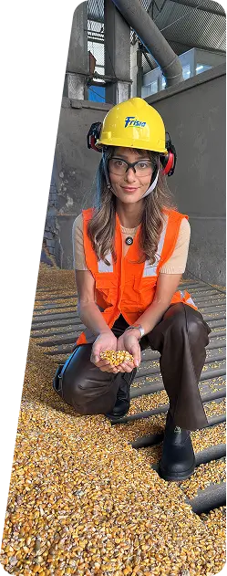
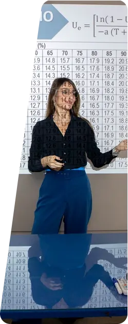
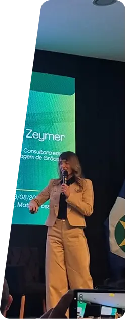
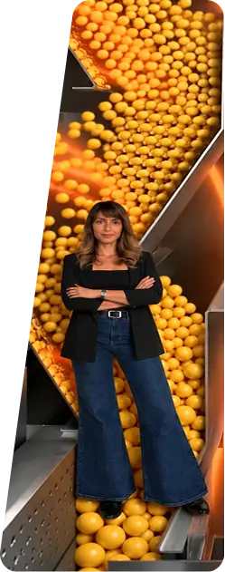

Consultoria • Treinamentos • Palestras • Publicidade
TRANSFORMO CIÊNCIA EM DECISÕES PRÁTICAS
Conhecimento aplicado à realidade da pós-colheita para conservar a qualidade dos grãos, reduzir perdas e gerar resultados.
Cada grão conta.
FALE COMIGO+10 anos
de experiência em pós-colheita de grãos
Doutora em
Engenharia Agrícola
UFV / University of Illinois
Forbes
100 Mulheres Doutoras
do Agro
SOBRE MIM
Sou Juliana Zeymer, Engenheira Agrônoma e Doutora em Engenharia Agrícola. Minha trajetória na pós-colheita começou na pesquisa e ganhou forma dentro das unidades armazenadoras, acompanhando de perto os desafios de conservar grãos com qualidade.
Ao longo dos anos, entendi que conhecimento técnico só gera valor quando chega às pessoas e se transforma em decisões melhores. É isso que direciona o meu trabalho.
Hoje compartilho esse conhecimento através de consultorias, treinamentos, palestras e publicidade, conectando informação, comunicação e a realidade de quem trabalha com pós-colheita.
COMO POSSO CONTRIBUIR
CONSULTORIA
Toda perda tem uma causa. O primeiro passo é encontrá-la.
Na pós-colheita, perdas que parecem pequenas podem representar toneladas de grãos e milhares de reais ao final de uma safra.
Na consultoria, analiso dados, processos e condições de armazenagem para identificar onde, como e por que essas perdas estão acontecendo.
A partir do diagnóstico, transformamos informação em ações para reduzir perdas, preservar a qualidade dos grãos e melhorar os resultados da operação.
Quero reduzirminhas perdas

TREINAMENTOS
Conhecimento que chega à equipe e transforma a operação.
Na pós-colheita, muitas decisões acontecem todos os dias, diretamente na operação. E uma equipe bem preparada faz diferença na qualidade dos grãos, nas perdas e nos resultados da unidade.
Meus treinamentos unem conhecimento técnico e situações reais para que a equipe entenda o que fazer, por que fazer e como tomar decisões melhores na prática.
Conteúdo aplicado à realidade de cada unidade, da armazenagem ao monitoramento dos grãos.
Quero capacitarminha equipe

PALESTRAS
Decisões que preservam o seu patrimônio.
Uma unidade armazenadora pode ter tecnologia, estrutura e capacidade. Mas são as decisões tomadas todos os dias que determinam quanto desse patrimônio será preservado.
Na minha palestra, mostro como decisões na pós-colheita impactam diretamente a qualidade dos grãos, as perdas e os resultados da operação.
Uno ciência, dados e situações reais para mostrar que conservar grãos vai muito além de armazenar.
É entender o que está acontecendo para decidir melhor.
Quero levaressa palestra

PUBLICIDADE
Sua marca precisa de alcance. Mas, principalmente, de credibilidade.
No agro, comunicar uma solução exige mais do que mostrar um produto. É preciso traduzir tecnologia em conteúdo que o público entende, confia e reconhece valor.
Por isso, desenvolvo publicidade em diferentes formatos: vídeos com IA, gravações em estúdio e conteúdos produzidos dentro de unidades armazenadoras ou empresas.
Tudo com conhecimento técnico, linguagem acessível e uma comunicação conectada à realidade da pós-colheita.
Quero divulgarminha marca

POR QUE JULIANA ZEYMER?
OS FEEDBACKS FALAM POR SI SÓ
"Boa tarde!!
Passando para agradecer pela excelente consultoria.
Sua didática, clareza na apresentação dos conteúdos e
a forma objetiva de transmitir o conhecimento tornaram
o aprendizado fácil e proveitoso.
Parabéns pela condução do treinamento e muito obrigada
por compartilhar seu conhecimento conosco.
Foi uma experiência de grande valor para todos os participantes."
"Ficou demais e sua apresentação foi certamente uma das melhores do evento! Parabéns"
"Seu bom trabalho e dedicação que vai trazer resultados."
"Ficou demais e sua apresentação foi certamente uma das melhores do evento!
Parabéns!"
"Obrigada Juliana Soares Zeymer, por trazer informações tão relevantes e complementares ao tema principal 'pesagem' além de uma forma leve e dinâmica de apresentar os conteúdos!!!"
"Parabéns! Cada dia melhores os teus vídeos, super didáticos! Ótima explicação, pois com esse checklist, muitos problemas poderiam ser previstos e ou solucionados antes do sinistro."
"Trabalho na área e suas informações são muito bem colocadas. Parabéns pelo trabalho."
"Seus posts são muito ilustrativos e vão de encontro com a realidade dos profissionais da área, parabéns Juliana Zeymer."
"Meus parabéns você é uma mulher super inteligente para o Agro, informações muito importantes."
"Meus parabéns pela explicação você é nota 1000"
- PRECISA DE VISÃO TÉCNICA PARA DECIDIR COM MAIS SEGURANÇA?
- QUER LEVAR CONHECIMENTO PARA SUA EQUIPE?
- SUA MARCA PRECISA SE CONECTAR MELHOR COM O PÚBLICO DO AGRO?
- ESTÁ ORGANIZANDO UM EVENTO?
VAMOS VER COMO POSSO AJUDAR.
FALAR COM JULIANA